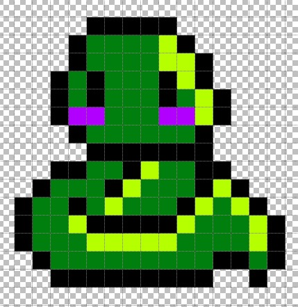

Nuestros mapa estaran compuesto por 30 salas diferentes en las que tendras que ir avanzando poco a poco.
Las primeras salas saldran pocos enemigos, cuando vayas avanzando en las salas se ira incrementando el número de enemigos. Y cuando llegues al final del mapa la última sala tendras un jefe final, que sera alguno de los enemigos que te has encontrado ya pero habrá aumentado de tamaño, lo cual le hace tener más vida y daño.
El mapa final estara basado en el fin del mundo.
